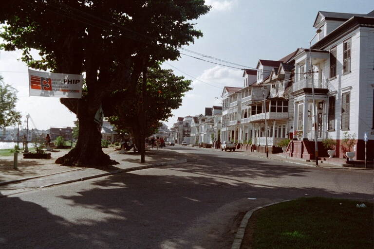
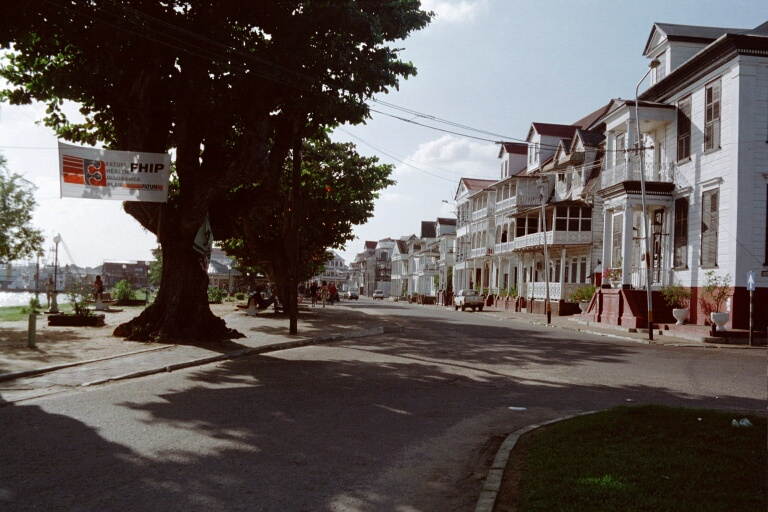

Столиця Paris
Парамарибо
Парама́рибо (нід. Paramaribo, сур. Paramaribo, прізвисько Par′bo) — столиця та найбільше місто Суринаму. Населення міста — 243 640 чоловік.
Розташований на річці Суринам.
Парамарибо розташований на річці Суринам, у 20 кілометрах від місця, де вона впадає в Атлантичний океан. Клімат цієї території екваторіальний.
Регіон був колонізований англійцями в 1630 році, в 1650 році місто стало столицею нової колонії. Колонія була передана голландцям в 1667 році в обмін на території в Північній Америці (район сучасного Нью-Йорка), які і управляли Суринамом до 1975 року, коли країна отримала незалежність.
Населення міста становить дещо більше половини населення країни. Етнічний склад украй різноманітний: нащадки переселенців з Індії — найчисленніша група, креоли, індонезійці, негри, китайці, голландці і нечисленні американські індіанці — відвічні мешканці країни.
Температура протягом дня коливається від +23 до +31 ° С, а зими і літа немає, оскільки весь рік температура повітря тримається на одному і тому ж рівні. Близько 200 днів на рік йдуть дощі, сезон дощів триває з квітня по липень, у вересні та жовтні дощі не такі рясні. У загальній складності випадає близько 2300 — 3000 мм опадів. Природна рослинність представлена головним чином вічнозеленими деревами та чагарниками. Тваринний світ околиць столиці представлений мавпами, ягуарами, пумами, тапірами, мурахоїдами, броненосцями, багато птахів. Води річки Суринам багаті рибою.
 
